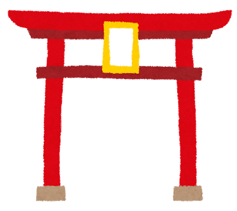

Obiettivi
- Usare alcuni verbi direttamente nella forma cortese in -ます, senza studiare ancora i gruppi verbali.
- Costruire frasi con oggetto + を + verbo e semplici domande.
- Dire «non mangio / non bevo» con -ません.
- Recuperare も, le posizioni e どこ.
- Riprendere i santuari shintoisti e svolgere brevi role play.
Gli spazi sono didattici. Manteniamo ou e uu nelle romanizzazioni corrispondenti; は particella si trascrive wa. を particella si pronuncia o e qui si trascrive o. I furigana indicano la lettura dei kanji. Studiamo i verbi già nella forma in -masu: non introduciamo ora forma dizionario, ichidan/godan, passato o forma -te.
\n1. Ripasso: presenza, posizioni e どこ
います si usa nel modello di base per persone e animali; あります per oggetti e piante. Per chiedere dove si trova qualcosa riprendiamo soltanto どこ (doko), «dove». Rispondiamo con un luogo o una posizione già conosciuta.
ほん は どこ に ありますか。
Hon wa doko ni arimasu ka. — Dov’è il libro?
つくえ の 上 に あります。
Tsukue no ue ni arimasu. — È sopra il tavolo.
ねこ は どこ に いますか。
Neko wa doko ni imasu ka. — Dove si trova il gatto?
いす の 下 に います。
Isu no shita ni imasu. — È sotto la sedia.
A coppie: spostate un libro, una borsa o un’immagine di un animale. Fate una domanda con どこ e rispondete descrivendo la posizione reale.
\n2. Verbi pronti all’uso in -ます
Impariamo queste forme intere, come vocaboli. La forma in -ます è cortese e non cambia secondo la persona: tabemasu può significare «mangio», «mangi» o «mangia», in base al contesto. Esprime azioni abituali o future, non necessariamente un’azione in corso proprio adesso. Non aggiungiamo です dopo il verbo.
| Verbo con furigana | Romaji | Significato |
|---|---|---|
| 食べます | tabemasu | mangiare |
| 飲みます | nomimasu | bere |
| 買います | kaimasu | comprare |
| 見ます | mimasu | vedere, guardare |
| 聞きます | kikimasu | ascoltare, sentire |
| 読みます | yomimasu | leggere |
| 書きます | kakimasu | scrivere |
| します | shimasu | fare |
Per la prima pratica concentriamoci su tabemasu, nomimasu e kaimasu; gli altri verbi restano disponibili come repertorio guidato.
\n3. Il complemento oggetto: を e il negativo
を indica qui il complemento oggetto: ciò che mangiamo, beviamo, compriamo o leggiamo. Il modello è oggetto + を + verbo. Il verbo va alla fine. Possiamo aggiungere il tema: わたし は + oggetto + を + verbo, ma lo omettiamo quando è chiaro.
パン を 食べます。
Pan o tabemasu. — Mangio il pane.
おちゃ を 飲みます。
Ocha o nomimasu. — Bevo il tè.
ほん を 買います。
Hon o kaimasu. — Compro un libro.
えいが を 見ます。
Eiga o mimasu. — Guardo un film.
おんがく を 聞きます。
Ongaku o kikimasu. — Ascolto musica.
ほん を 読みます。
Hon o yomimasu. — Leggo un libro.
なまえ を 書きます。
Namae o kakimasu. — Scrivo il nome.
しゅくだい を します。
Shukudai o shimasu. — Faccio i compiti.
Vocabolario: パン pan = pane; おちゃ ocha = tè; みず mizu = acqua; えいが eiga = film; おんがく ongaku = musica; なまえ namae = nome; しゅくだい shukudai = compiti.
Domande e risposte
Aggiungiamo か alla fine della frase cortese.
おちゃ を 飲みますか。
Ocha o nomimasu ka. — Bevi del tè?
はい、飲みます。
Hai, nomimasu. — Sì, bevo.
Il negativo in -ません
Per questi verbi già dati in -ます basta sostituire ます con ません. Non serve conoscere il gruppo verbale per questa trasformazione.
| Affermativo | Negativo | Romaji del negativo |
|---|---|---|
| 食べます | 食べません | tabemasen |
| 飲みます | 飲みません | nomimasen |
| 買います | 買いません | kaimasen |
いいえ、おちゃ を 飲みません。
Iie, ocha o nomimasen. — No, non bevo tè.
Non confondere i modelli: ほん ではありません, hon dewa arimasen = non è un libro; ほん は ありません, hon wa arimasen = il libro non c’è; ほん を かいません, hon o kaimasen = non compro un libro.
\n4. Recuperiamo も: anche e neanche
も si mette dopo l’elemento che aggiungiamo. Nei primi due modelli sostituisce は o が: non scriviamo はも o がも.
これ は ほん です。それ も ほん です。
Kore wa hon desu. Sore mo hon desu. — Questo è un libro. Anche quello è un libro.
へや に ねこ が います。いぬ も います。
Heya ni neko ga imasu. Inu mo imasu. — Nella stanza c’è un gatto. C’è anche un cane.
わたし は せんせい ではありません。ルイジさん も せんせい ではありません。
Watashi wa sensei dewa arimasen. Ruiji-san mo sensei dewa arimasen. — Non sono un insegnante. Neanche Luigi è un insegnante.
Colleghiamo も ai nuovi verbi
Quando aggiungiamo un altro oggetto, も prende qui il posto di を.
ほん を 買います。ざっし も 買います。
Hon o kaimasu. Zasshi mo kaimasu. — Compro un libro. Compro anche una rivista.
Non generalizzare la sostituzione a tutte le particelle: oggi ci limitiamo ai modelli mostrati. Per il role play basta cambiare una parola alla volta.
\n5. Recupero culturale: i santuari shintoisti
Riprendiamo la parte culturale della lezione 4. Lo shinto è una tradizione religiosa giapponese legata ai kami, presenze venerate associate anche a luoghi, fenomeni naturali e antenati. Un santuario si chiama jinja; il torii segnala l’accesso a uno spazio sacro. Shinto e buddhismo sono distinti, ma hanno una lunga storia di relazioni e compresenza.

Durante una visita
Osserva le indicazioni locali, parla con rispetto e non ostacolare chi prega. All’area di purificazione si possono lavare mani e sciacquare la bocca seguendo le istruzioni disponibili: non si beve l’acqua, non si appoggiano le labbra al mestolo e non si sputa nella vasca. Alcuni santuari hanno impianti o procedure diverse.
Una sequenza comune di preghiera è due inchini, due battiti di mani e un inchino finale, ma non vale ovunque: segui le regole del santuario. Non applicarla automaticamente ai templi buddhisti. Fotografa soltanto dove è consentito.
Vocabolario di riconoscimento: じんじゃ jinja = santuario shintoista; とりい torii = portale del santuario. Per approfondire e rivedere le altre immagini: capitolo 6 della lezione 4.
\n6. Role play guidati
Lavorate a coppie. Leggete il modello, cambiate una parola usando le carte e poi scambiate i ruoli. Prima provate con romaji, poi copritelo. Non servono prezzi, ordinazioni o nuove formule grammaticali.
A. Prepariamo gli acquisti
Situazione: due compagni decidono cosa comprare prima di entrare in negozio. Non è una simulazione del dialogo con il cassiere.
A: パン を 買いますか。
Pan o kaimasu ka. — Compri del pane?
B: はい、買います。おちゃ も 買います。
Hai, kaimasu. Ocha mo kaimasu. — Sì, lo compro. Compro anche del tè.
A: ざっし を 買いますか。
Zasshi o kaimasu ka. — Compri una rivista?
B: いいえ、買いません。
Iie, kaimasen. — No, non la compro.
Carte: パン pan, おちゃ ocha, みず mizu, ほん hon, ざっし zasshi. B sceglie due acquisti e una cosa da non comprare; A deve scoprirli.
B. Cerchiamo il libro
A: ほん は どこ に ありますか。
Hon wa doko ni arimasu ka. — Dov’è il libro?
B: はこ の 中 に あります。
Hako no naka ni arimasu. — È dentro la scatola.
A: ほん を 読みますか。
Hon o yomimasu ka. — Leggi il libro?
B: はい、読みます。
Hai, yomimasu. — Sì, lo leggo.
B colloca il libro senza mostrarlo ad A. Usate はこ の 中, hako no naka, oppure つくえ の 上, tsukue no ue. Descrivete la posizione effettiva.
C. Osserviamo un santuario
Usate una fotografia o un disegno preparato dall’insegnante con un torii, un albero e un gatto sotto l’albero. La domanda su come leggere il posto resta una domanda di posizione con どこ.
A: とりい が あります。
Torii ga arimasu. — C’è un torii.
B: き も あります。
Ki mo arimasu. — C’è anche un albero.
A: ねこ は どこ に いますか。
Neko wa doko ni imasu ka. — Dove si trova il gatto?
B: き の 下 に います。
Ki no shita ni imasu. — È sotto l’albero.
Se usate una fotografia diversa, cambiate le battute per descrivere soltanto ciò che vedete. Commentate poi in italiano due comportamenti rispettosi durante una visita. L’acqua dell’area di purificazione non è una bevanda.
\nEsercizi
A. Scegli il verbo
Completa scegliendo tabemasu, nomimasu, kaimasu: 1. Mangio pane: パン を ___。 2. Bevo acqua: みず を ___。 3. Compro un libro: ほん を ___。
B. Completa le particelle
1. ほん ___ よみます。 2. おちゃ ___ のみます。 3. つくえ の うえ ___ ほん が あります。 4. へや に ねこ ___ います。
C. Trasforma in negativo
1. たべます tabemasu 2. のみます nomimasu 3. かいます kaimasu 4. よみます yomimasu 5. します shimasu
D. Aggiungi anche
1. これ は ほん です。それ ___ ほん です。 2. ねこ が います。いぬ ___ います。 3. ほん を かいます。ざっし ___ かいます。
E. Traduci
1. Bevo tè. 2. Non compro una rivista. 3. Dov’è il libro? 4. È dentro la scatola.
F. Cultura e pratica orale
1. Il jinja è un santuario shintoista o un tempio buddhista? 2. L’acqua della purificazione si beve? 3. Due inchini, due battiti e un inchino valgono sempre e ovunque? 4. A coppie: svolgete uno dei tre role play cambiando almeno una parola.
Soluzioni — apri dopo aver provato
A: 1. たべます tabemasu; 2. のみます nomimasu; 3. かいます kaimasu.
B: 1. を o; 2. を o; 3. に ni; 4. が ga.
C: 1. たべません tabemasen; 2. のみません nomimasen; 3. かいません kaimasen; 4. よみません yomimasen; 5. しません shimasen.
D: 1–3. も mo.
E1: おちゃ を 飲みます。
Ocha o nomimasu.
E2: ざっし を 買いません。
Zasshi o kaimasen.
E3: ほん は どこ に ありますか。
Hon wa doko ni arimasu ka.
E4: はこ の 中 に あります。
Hako no naka ni arimasu.
F: 1. Santuario shintoista. 2. No. 3. No, si seguono le indicazioni locali; non si trasferisce automaticamente la sequenza ai templi buddhisti. 4. Risposta libera: controllate verbo finale, particelle e coerenza con carte o immagine.
Compito a casa
- Scrivi tre frasi con oggetto + を + verbo in -ます e il romaji.
- Trasforma due frasi in negativo con -ません.
- Aggiungi una frase con も.
- Prepara quattro battute di uno dei role play; per chiedere un luogo usa soltanto どこ.
- Ripassa due regole di comportamento al santuario.
Corso per principianti a cura di Davide Chiaramonte e Perplexity AI.